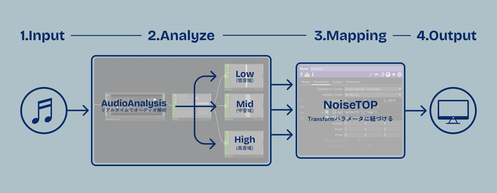

音楽と連動してリアルタイムに変化する映像が、人に与える影響を「没入・興奮・疲労・不快」の4つの観点から定量的に評価した論文です。
TouchDesignerで制作したシステムを用いた被験者実験を通して、楽曲の特性と映像の同期度合いの相性が視聴体験を大きく左右することを明らかにしました。
主要な結果
- アップテンポな楽曲 × 低音域のみ同期
→ 視覚的疲労を最小限に抑えつつ、没入感と興奮度を最大化。 - 落ち着いた楽曲 × 過度な同期
→ 盛り上がらず疲労感だけを増大させるリスクを確認。
Research Background
感覚で作られるオーディオリアクティブに確かな指標を。
VJやインタラクティブアートの制作現場において、音楽をリアルタイムに解析してパーティクルなどの映像を動かす手法は王道のアプローチです。 音の波形に合わせて映像が激しく変化する演出は、観客に強烈な没入感と興奮をもたらします。しかし同時に、長時間の激しい視覚変化は眼精疲労や不快感を蓄積させるという大きなリスクも孕んでいます。
本研究では、映像と音楽の多様な同期手法が視聴者の感情にどう作用するのかを実験によって数値化しました。感覚的な映像表現の裏側にあるメカニズムを解き明かし、安全で快適な体験を設計するための指針を探ります。
System
検証要件を満たすリアルタイム生成システムの構築
TouchDesignerを使用し、音楽からリアルタイムにパーティクルが動くシステムを構築。具体的には、Audio Analysisを用いて入力音源を低・中・高音域の周波数帯域に分割し、リアルタイムに数値を計算します。抽出した各帯域の数値を独立した変数として扱い、パーティクル生成のコアとなるNoiseTOPのパラメータに紐づける設計としました。これにより、検証に必要なすべての条件を単一のシステム内で安定して制御できる環境を実現しています。パーティクルシステムに関しては elekktronaut氏のチュートリアル動画 を参考にしました。
また、映像のベースデザインには、意味を持たないかつ一般的なパーティクル表現を採用しました。これにより、映像の内容自体が引き起こす興奮や没入の誘発を最小限に抑えています。

オーディオリアクティブ映像システムの仕組み
Experiments
構築したシステムを用い、20代の男女を対象に没入・興奮・疲労・不快の4観点から評価する実験を行いました。より詳細なメカニズムを解き明かすため、3つの段階的なアプローチで検証を進めました。
実験1：【課題発見】全音域同期は没入を高めるが疲労も引き起こす
オーディオリアクティブ映像の基本であるすべての音に映像が反応する「全音域同期」が、音楽と無関係に動く「非同期」と比べて視聴体験にどのような影響を与えるかをベースラインとして測定しました。アップテンポな曲と落ち着いた曲のそれぞれで比較を行いました。
その結果、全音域同期は非同期に比べて圧倒的に没入感と興奮度を高める一方で、激しい映像変化が視覚的な負荷となり、疲労や不快感も顕著に上昇するという体験のトレードオフが明確に現れました。特に落ち着いた曲での全音域同期では、音楽のテンションと視覚刺激のミスマッチが起き、ポジティブな感情は得られないまま疲労だけが蓄積する非常にネガティブな結果となりました。
アップテンポな曲での全音域同期/非同期映像
実験2：【解決策の模索】低音域のみの同期が疲労を抑える最適解
実験1で浮き彫りになった全音域同期による疲労・不快感という課題を解決するため、特定の周波数(低・中・高)のみを映像に連動させる部分同期の効果を検証しました。
検証の結果、アップテンポな曲×低音域のみの同期が全音域同期に匹敵する高い没入感・興奮を維持しながらも、疲労と不快感を大幅に抑え込めるベストなバランスであることが実証されました。一方で、落ち着いた曲においては、どの音域を同期させてもポジティブな感情は上がらず、不快感が上回ってしまいました。脳が「何の音に映像が反応しているか」を直感的に理解できるビートこそが、心地よいオーディオリアクティブのカギであることが示唆されました。
アップテンポな曲での低/中/高音域同期
追加実験：【原因の深掘り】ネガティブな感情は映像の激しさに依存する
※本実験はオンラインのアンケート(リンク配布による各自デバイスでの視聴)によるものであり、実験1・2とは実験環境が大きく異なるため、あくまで参考程度の結果となります。
実験1・2を通して落ち着いた曲の評価が常に低かった原因が、映像デザインの激しさにあるのかを探るため、映像の反応度合い(パラメータの変位量)を1/3に抑え、色も白に近づけた控え目な演出を追加して検証しました。
結果として、従来の激しい演出から控え目な演出に抑えることで、確かに疲労や不快感は大幅に軽減されました。しかし、同時に没入や興奮といった面白さも低下してしまいました。この追加実験により、演出を抑えれば安全にはなるものの、エンタメとしての没入感も道連れになって下がるという根本的なジレンマが浮き彫りになりました。
アップテンポな曲での控え目な演出/激しい演出
Insights
一連の検証を通して、単なるおすすめの同期手法に留まらない、人間の認知や感情に関する興味深い法則が見えてきました。
何の音に反応しているかが直感的に分からないと、人は疲労する
落ち着いた曲で不快感が高かった原因として、視聴者の認知負荷が挙げられます。ビートが強調されていない曲で無理に同期を行うと、視聴者は「映像が何の音を拾って動いているのか」と結びつけることが出来ず、強い違和感や不快感に繋がります。また、軽い音に対して映像が小刻みに激しく動くといったミスマッチも、強いストレスを与えることがアンケートから示唆されました。
ポジティブな感情は音楽が作り、ネガティブな感情は演出の激しさが作る
実験の結果から、没入や興奮といったポジティブな感情は楽曲の特性に強く依存し、一方で疲労や不快といったネガティブな感情は演出の激しさに直接依存することが分かりました。だからこそ、落ち着いた曲で映像だけを激しくしても盛り上がらず、ただ疲れるだけになってしまいます。映像の演出は、あくまで音楽を引き立てるものとして、音楽の特性に合わせて調整することが重要です。
全音域同期はリスキーな劇薬である
映像と音楽を全ての音域で同期させるのは、没入感を生む一方で、視覚・聴覚への負荷が激増するトレードオフの性質を持ちます。ついすべてのパラメータを音に連動させたいと考えがちですが、あえて引き算をして部分同期に留めることが、長時間の体験においてメリットだけを抽出する安全で最適な設計に繋がります。
Future Vision
本プロジェクトを通して、オーディオリアクティブ映像が人間の心理と身体に与える影響の輪郭をつかむことが出来ました。しかし、真に「あらゆる人間が心地よく没入できる空間」デザインするためには、まだ探求するべき課題が残されています。
ビジュアル表現の多様化と最適化
本実験では、抽象的かつ一般的なパーティクルシステムに限定して効果を測定しました。しかし、色や動き方がアップテンポな曲によりマッチしていたと思われます。今後は、落ち着いた曲に特化した柔らかなビジュアル表現や、さらにアップテンポな曲に向けたエフェクトなど、映像デザインのアプローチを拡張し、それぞれの表現における最適な同期バランスを探求していく必要があります。
個人の嗜好と多様性への配慮
実験データの中には、平均値だけでなく標準偏差が大きい条件がいくつか存在しました。これは、同じ映像を見ても「心地よい」と感じる人と「不快」と感じる人の個人差が少なからず存在することを示しています。今後は若年層だけでなく、多様な年代や音楽嗜好を持つ人々を対象に検証を広げ、より多くの人が安全に楽しめるユニバーサルな体験設計を目指したいと考えています。
テクノロジーの進化により、私たちは空間全体をリアルタイムに制御し、圧倒的な没入感を生み出せるようになりました。しかし、刺激を増やすだけの「足し算の演出」は、時に鑑賞者を疲弊させてしまいます。
私はこの研究を通して、「あえて引き算をすることで生まれる心地よさ」を学びました。今後の制作活動の設計においては、技術をありったけ詰め込んだ派手なものを作るのではなく、常に「鑑賞者の体と心にどう影響するか」という人間中心の視点を持ち、感動と安全性を両立できるようなエンジニアでありたいと考えています。